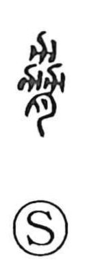

脅

Uncategorized
Kun: obiyakasu, odosu, odokasu | On: kyo, kyu
to threaten ・ to menace ・ to intimidate
Explanation
Shirakawa reads 脅 as a picto‑phonetic graph. Its upper element is the old “three‑plough” form—originally three 力 modeled on the plough 耒—symbolizing cooperative cultivation and serving as the phonetic that underlies the on‑reading kyo (the same element stands behind 協). When this row‑like form is viewed as ribs and combined with the flesh classifier 月, it becomes a body‑part graph: in 脇 it names the flank. In 脅, with the same parts, it evokes drawing up the shoulders so the ribs stand out—an intimidating stance—and thus comes to mean to threaten or menace.